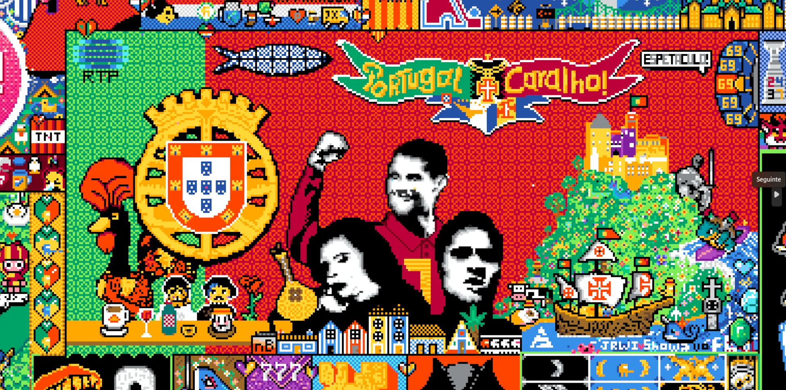
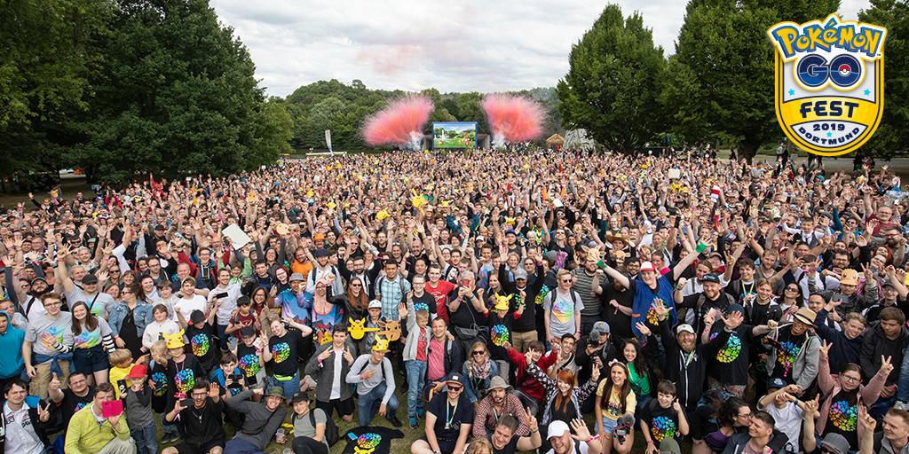

Aqui celebramos o impacto, a cultura e a união da comunidade de jogadores!
A Guerra dos Pixels (r/place) 🎨

Durante o evento r/place do Reddit, milhões de utilizadores uniram-se para pintar um mural gigante. Com direito a apenas um pixel a cada 5 minutos, a comunidade portuguesa juntou-se através de streamers e fóruns para desenhar a nossa bandeira, caravelas, o Cristiano Ronaldo, o Fernando Pessoa e até um pastel de nata num esforço de equipa inesquecível!
Press F to Pay Respects 🪦
O que começou como uma simples e bizarra instrução de teclado no Call of Duty: Advanced Warfare (2014) durante uma cena de funeral tornou-se no maior símbolo global de respeito e homenagem na cultura da internet. Hoje em dia, qualquer transmissão ao vivo ou chat de streaming enche-se de "F" quando algo marcante acontece.
A Magia do Trompete nos Majors de CS 🎺
Nos torneios de Counter-Strike, a energia do público é fundamental, mas o lendário "Homem do Trompete" roubou a cena, destacando-se de forma inesquecível no Major de Paris. Tocando o seu instrumento de forma cirúrgica entre as rondas para elevar a energia da arena a outro nível, ele guiou os cânticos de milhares de fãs sem nunca ofuscar os jogos. O impacto foi tão grande e carismático que muitos membros da comunidade começaram a fazer campanhas para que ele recebesse o seu próprio adesivo (sticker) oficial dentro do jogo! Uma prova viva da paixão pura que se vive nos eSports.
O Verão da Paz Mundial: Pokémon GO (2016) 🌍

O lançamento de Pokémon GO no verão de 2016 marcou um momento inesquecível de união mundial. Parques, praças e ruas de todas as cidades encheram-se de milhões de desconhecidos que saíam juntos para capturar criaturas digitais, quebrando barreiras sociais e promovendo um convívio pacífico inédito através do gaming.
Evo Moment #37: O "Daigo Parry" 🥋
No torneio Evo de 2004 (Street Fighter III), o jogador Daigo Umehara estava a um milímetro de ser eliminado. Com a vida a zero, ele conseguiu a proeza de fazer um "parry" perfeito (bloqueio que exige reflexos milimétricos) a todos os 15 golpes do ataque especial do seu adversário, virando a partida logo a seguir. A reação explosiva do público tornou este vídeo o mais lendário dos eSports!